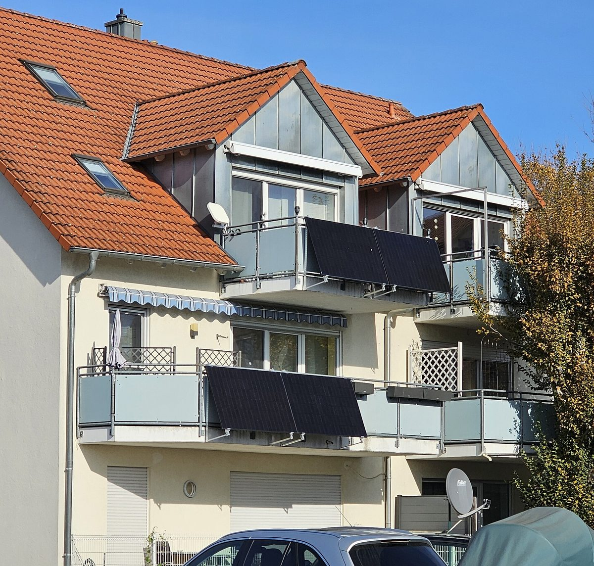

베란다 태양광 보급, 세입자·아파트 단체신청까지 문 열었지만…지자체 초기 예상 수요는 목표의 13.6%

기후에너지환경부 19일 변경공고로 소유주 동의 받은 임차인 지원·자부담 분납 허용, 사업계획서 접수 12월 11일까지…56개 지자체 예상 수요 1만3,629가구, 지방비 40~50% 이상 부담이 걸림돌
기후에너지환경부가 국비 375억 원을 들여 올해 10만 가구에 보급하려는 베란다(가정형) 태양광 사업의 지원 대상을 세입자까지 넓혔지만, 참여 뜻을 밝힌 지방자치단체들이 처음 내놓은 예상 수요는 목표의 13.6%에 머물렀다. 정부는 지난 19일 변경공고로 집주인 동의를 받은 임차인도 지원을 받을 수 있게 하고, 아파트 등 공동주택의 단체신청과 합의에 따른 자부담 분납을 허용했으며, 지자체 사업계획서 접수 기한을 12월 11일까지 늘렸다. 가구당 500W 이내, 설치비 약 100만 원 가운데 국비와 지방비로 80%를 대 주민 부담은 약 20만 원이지만, 서울은 총사업비의 국비 30% 이내·지방비 50% 이상, 다른 지역은 국비 40% 이내·지방비 40% 이상을 지자체가 맞춰야 한다. 서왕진 의원이 한국에너지공단에서 받은 자료를 보면 56개 광역·기초 지자체의 초기 예상 수요는 1만3,629가구, 필요한 국비는 약 39억 원으로 편성액의 10.4%에 그쳤으며, 이는 실제 신청 실적이 아니라 사업 초기에 지자체가 낸 예상치다. 서 의원은 사업을 줄이기보다 지방정부의 집행 여건을 고치고 재정이 어려운 지자체에는 국비를 더 줘야 한다고 주문했다. 업계는 500W급 국산 마이크로인버터 상용화와 단지별 설치 협의를 과제로 꼽았고, 이지욱 한국제품안전협회 건축물태양광안전센터장은 "이를 지탱할 기존 난간의 상태가 중요하다"며 노후 난간의 부식·볼트 풀림 점검을 강조했다.
시민에너지 관점
초기 예상 수요 1만3,629가구가 목표의 13.6%에 그친 것은 국비를 375억 원 마련해도 지방비 40~50% 이상을 대야 하는 지자체가 움직이지 않으면 보급이 멈춘다는 뜻이다. 베란다 태양광은 발전량이 작아 효과가 없다는 지적도 있지만, 이번 변경공고로 집이 없는 세입자와 아파트 단지 전체가 처음으로 참여할 길이 열렸다는 점은 작지 않다. 가구마다 따로 신청하게 두기보다 입주자대표회의나 주민 협동조합이 단체로 신청하고 시공·안전점검·유지관리를 함께 맡으면, 지자체 행정 부담은 줄고 주민은 같은 단지 이웃과 함께 전기를 만드는 주인이 된다. 정부와 지자체는 재정이 약한 지역의 지방비 몫을 덜어 주고, 단지 단위 주민 조직이 신청 창구가 될 수 있도록 지침을 서둘러 내야 한다.
출처: 전기신문 2026-10-30 김진후 원문 보기
ベランダ太陽光の普及、賃借人・集合住宅の団体申請まで門戸を開いたが…自治体の初期予想需要は目標の13.6%
気候エネルギー環境部が19日の変更公告で所有者の同意を得た賃借人への支援・自己負担の分割納付を認め、事業計画書の受付を12月11日まで延長…56自治体の予想需要は1万3,629世帯、地方費40〜50%以上の負担が壁に
韓国の気候エネルギー環境部が国費375億ウォンを投じて今年10万世帯に普及させようとしているベランダ（家庭用）太陽光事業で、支援対象を賃借人まで広げたものの、参加の意向を示した自治体が当初示した予想需要は目標の13.6%にとどまった。政府は19日の変更公告で、家主の同意を得た賃借人も支援を受けられるようにし、マンションなど集合住宅の団体申請と合意に基づく自己負担の分割納付を認め、自治体の事業計画書の受付期限を12月11日まで延ばした。1世帯あたり500W以内、設置費約100万ウォンのうち国費と地方費で80%を賄い、住民負担は約20万ウォンだが、ソウルは総事業費の国費30%以内・地方費50%以上、その他の地域は国費40%以内・地方費40%以上を自治体がそろえなければならない。徐旺鎮（ソ・ワンジン）議員が韓国エネルギー公団から受け取った資料によると、56の広域・基礎自治体の初期予想需要は1万3,629世帯、必要な国費は約39億ウォンで予算額の10.4%にとどまり、これは実際の申請実績ではなく事業初期に自治体が出した見込みだ。徐議員は事業を縮小するより地方政府の執行環境を改善し、財政が厳しい自治体には国費支援を増やすべきだと求めた。業界は500W級の国産マイクロインバーターの商用化と団地ごとの設置協議を課題に挙げ、韓国製品安全協会のイ・ジウク建築物太陽光安全センター長は、パネルを支える既存の手すりの状態が重要だとして、老朽化した手すりの腐食やボルトの緩みの点検を強調した。
市民エネルギーの視点
初期予想需要1万3,629世帯が目標の13.6%にとどまったことは、国費375億ウォンを用意しても、地方費40〜50%以上を負担する自治体が動かなければ普及が止まることを意味する。ベランダ太陽光は発電量が小さく効果がないとの指摘もあるが、今回の変更公告で持ち家のない賃借人や団地全体が初めて参加できる道が開かれた意味は小さくない。世帯ごとに個別に申請させるより、入居者代表会議や住民協同組合が団体で申請し、施工・安全点検・維持管理を共に担えば、自治体の行政負担は減り、住民は同じ団地の隣人と共に電気をつくる主人になる。政府と自治体は財政の弱い地域の地方費負担を軽くし、団地単位の住民組織が申請窓口になれるよう指針を急いで示すべきだ。
出典: 電気新聞（韓国） 2026-10-30 キム・ジンフ 原文を読む
阳台太阳能推广向租户和公寓集体申请敞开大门…但地方政府初期预计需求仅为目标的13.6%
气候能源环境部19日发布变更公告，允许经房东同意的租户获得补贴、自付部分分期缴纳，事业计划书受理延至12月11日…56个地方政府预计需求1.3629万户，40%至50%以上的地方配套资金成为障碍
韩国气候能源环境部计划投入375亿韩元国费、今年为10万户家庭推广阳台（家庭型）太阳能，虽已把补贴对象扩大到租户，但表示有意参与的地方政府最初提出的预计需求仅为目标的13.6%。政府在19日的变更公告中，允许经房东同意的租户也可获得补贴，允许公寓等共同住宅集体申请以及按协议分期缴纳自付部分，并把地方政府事业计划书的受理期限延长至12月11日。每户补贴容量在500W以内，约100万韩元的安装费中由国费和地方费承担80%，居民负担约20万韩元；但首尔须由地方政府配套总事业费的国费30%以内、地方费50%以上，其他地区为国费40%以内、地方费40%以上。根据议员徐旺镇从韩国能源公团获得的资料，56个广域和基层地方政府的初期预计需求为1.3629万户，所需国费约39亿韩元，仅占预算的10.4%；这不是实际申请业绩，而是项目初期地方政府提交的预估。徐议员呼吁，与其缩减项目，不如改善地方政府的执行条件，并为财政困难的地方政府增加国费支持。业界把500W级国产微型逆变器的商用化和各小区的安装协商列为课题，韩国产品安全协会建筑太阳能安全中心主任Lee Ji-wook则表示，支撑设备的既有栏杆状态很重要，强调要检查老旧栏杆的锈蚀和螺栓松动。
市民能源视角
初期预计需求1.3629万户、仅为目标的13.6%，说明即使准备了375亿韩元国费，只要须承担40%至50%以上地方配套资金的地方政府不行动，推广就会停滞。有人认为阳台太阳能发电量小、效果有限，但这次变更公告首次为没有自有住房的租户和整个公寓小区打开了参与的通道，意义不小。与其让每户单独申请，不如由业主代表会议或居民合作社集体申请，并共同承担施工、安全检查和维护，这样既能减轻地方政府的行政负担，居民也能与同一小区的邻居一起成为发电的主人。政府和地方政府应减轻财政薄弱地区的地方配套负担，并尽快出台指引，让以小区为单位的居民组织成为申请窗口。
来源: 电气新闻（韩国） 2026-10-30 Kim Jin-hu 查看原文
Korea's balcony solar program opens to tenants and apartment group applications, but local governments' early demand estimate is only 13.6% of the target
An October 19 revised notice from the Ministry of Climate, Energy and Environment lets tenants with the owner's consent take part and allows installment payment of the household share, with local plans now due December 11; 56 local governments estimated demand at 13,629 households, and the 40 to 50%-plus local cost share stands in the way
Korea's Ministry of Climate, Energy and Environment has widened its balcony (household) solar program, which aims to reach 100,000 households this year with 37.5 billion won in national funds, to include tenants, but the demand that interested local governments first estimated came to only 13.6% of the target. In a revised notice on October 19, the government let tenants with their landlord's consent receive support, allowed group applications from apartment complexes and other multi-unit housing as well as installment payment of the household share by agreement, and extended the deadline for local governments' project plans to December 11. Each household can get up to 500W, and national and local funds cover 80% of the roughly 1 million won installation cost, leaving residents about 200,000 won, but local governments must match the money: in Seoul national funds cover no more than 30% of total costs and local funds at least 50%, and elsewhere no more than 40% and at least 40% respectively. Data that lawmaker Seo Wang-jin obtained from the Korea Energy Agency show that 56 provincial and municipal governments initially estimated demand at 13,629 households, requiring about 3.9 billion won in national funds, or 10.4% of the budget; these are early estimates submitted by local governments, not actual applications. Seo called for improving local governments' capacity to carry out the program rather than scaling it back, and for more national support to fiscally weak localities. Industry officials named commercializing a 500W-class domestic microinverter and reaching agreement on installation complex by complex as the main tasks, and Lee Ji-wook, head of the Building Solar Safety Center at the Korea Product Safety Association, stressed that the condition of the existing railings that carry the panels matters, calling for checks on corrosion and loose bolts in older railings.
Citizen Energy View
An early demand estimate of 13,629 households, just 13.6% of the target, means that even with 37.5 billion won in national money set aside, deployment stalls if local governments that must put up 40 to 50% or more do not act. Some argue balcony panels produce too little to matter, but the revised notice opens a door for the first time to tenants who own no home and to whole apartment complexes, and that is no small change. Rather than leaving each household to apply alone, letting residents' councils or resident cooperatives apply as a group and share installation, safety checks and maintenance would ease the administrative load on local governments and make residents co-owners of power produced together with their neighbors. The national and local governments should lighten the local cost share for fiscally weak areas and quickly issue guidelines that let complex-level resident organizations serve as the application channel.
Source: Electric Times 2026-10-30 Kim Jin-hu Read the original